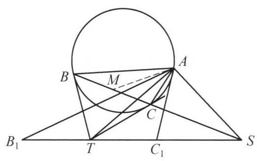
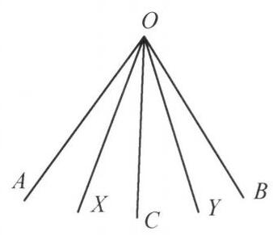

29 例 3：圆外接三角形旋转位似
29.1 题目
设 \Gamma 是 \triangle {ABC} 的外接圆，圆 \Gamma 在 B, C 两点的切线交于 T . 过 A 且垂直于 {AT} 的直线与直线 {BC} 交于 S ，点 {B}_1,{C}_1 在直线 {ST} 上( {B}_1 ， B 在 {BC} 的垂直平分线的同侧)，且 T{B}_1 = T{C}_1 = {TB} . 证明: \triangle A{B}_1{C}_1 \backsim \triangle {ABC} .

图 4-2
29.2 参考解答
如图 4-2，设 M 为 {BC} 的中点，则 {AM} ， {AT} 是 \angle {BAC} 的两条等角线，所以 \angle {BAT} = \angle {MAC} . 又 \angle {TBC} = \angle {BAC} ，所以
\angle {TBA} = \angle {TBC} + \angle {CBA}
= \angle {BAC} + \angle {CBA}
= {180}^{ \circ } - \angle {ACB},
于是由 T{C}_1 = {TB} 及正弦定理,得
\frac{T{C}_1}{AT} = \frac{TB}{AT} = \frac{\sin \angle {BAT}}{\sin \angle {TBA}} = \frac{\sin \angle {MAC}}{\sin \angle {ACB}} = \frac{MC}{AM}.
另一方面,因 \angle {TMS} = {90}^{ \circ } = \angle {TAS} ,故 A, M, T, S 四点共圆,于是 \angle {STA} = \angle {SMA} ，即 \angle {C}_1{TA} = \angle {CMA} ，因此， \triangle {AT}{C}_1 \backsim \triangle {AMC} . 同理 \triangle A{B}_{1}T \backsim \triangle {ABM} . 故 \triangle A{B}_1{C}_1 \backsim \triangle {ABC} . 原问题得证.
注 1: 由相似对应 \left( {T, M}\right. 为 {B}_1{C}_1,{BC} 的中点) 知,只需证明 \triangle {AMC} \backsim \; \triangle {AT}{C}_1 ,根据点定义的先后顺序发现这样证明是最自然的.
注 2:给定一个角 \angle {AOB} ，设 {OC} 是其角平分线，过 O 作两条关于 {OC} 对称的直线 {OX},{OY} ，则称 {OY} 是 {OX} 关于 \angle {AOB} 的等角线.

图 4-3
三角形的中线的等角线称为陪位中线，记过 \triangle {ABC} 的顶点 A 的中线的陪位中线称为 \triangle {ABC} 的 A -陪位中线. 关于陪位中线有如下重要结论:
设 \triangle {ABC} 的外接圆在 B, C 两点的切线交于 P ,则 {AP} 是 \triangle {ABC} 的 A -陪位中线.
29.3 解题思路与分析
教材和竞赛书中的几何证明通常采用“综合法”（正推法）书写——即直接抛出辅助点（如中点 M），然后做一连串看似毫无征兆的倒角和正弦定理计算，最后突然宣布得证。这种写法掩盖了探索过程。
如果用“分析法”（逆推法）将这个证明拆解还原，你会发现它的每一步几乎都是被题目条件“逼”出来的唯一选择。以下是完整的思维还原过程：
29.3.1 第一步：为什么要突然引入 BC 的中点 M？（从结论逆推）
审视点 B_1, C_1 的生成方式： 题目中 B_1, C_1 是怎么来的？它们是在直线 ST 上，以 T 为中心、以 TB 为半径截取出来的两个点（TB_1 = TC_1 = TB）。 这意味着：B_1, C_1 本身没有任何独立的几何性质（没有过它们的圆或特殊直线），它们唯一的几何意义就是“以 T 为中点、半长为 TB 的线段端点”。
寻找相似三角形的对应点： 我们要证 \triangle AB_1C_1 \sim \triangle ABC。既然在 \triangle AB_1C_1 中，T 是底边 B_1C_1 的中点，那么在相似对应关系下，\triangle ABC 中必须有一个与之对应的点——也就是底边 BC 的中点 M！ 这就是为什么证明第一句话就设 M 为 BC 的中点，并且连接中线 AM。
化整为零（拆成一半的三角形）： 两个三角形相似，当且仅当被中线劈开的两个“半三角形”对应相似（正如“注 1”所言）。 一旦证明了右半边的 \triangle ATC_1 \sim \triangle AMC，由于 TB_1 = TC_1 且 MB = MC，且 \angle ATB_1 与 \angle ATC_1 互补、\angle AMB 与 \angle AMC 互补，左半边的 \triangle ATB_1 \sim \triangle AMB 就会自动成立，进而合出 \triangle AB_1C_1 \sim \triangle ABC。
因此，原问题被 100% 等价转化为：证明 \triangle ATC_1 \sim \triangle AMC。
29.3.2 第二步：为什么一定要用 SAS（边角边）来证 \triangle ATC_1 \sim \triangle AMC？
把目光聚焦在 \triangle ATC_1 上，看看我们手里有什么筹码： * 线段 AC_1 是最后连起来的，我们既不知道它的长度，也不知道 \angle AC_1T 或 \angle C_1AT 的度数。所以 AA（两角相等） 此路不通。 * 在 \triangle ATC_1 中，我们真正有几何抓手的只有三样东西： 1. 公共边 AT（它是经典图形中的陪位中线）； 2. 底边 TC_1（题目直接给出了长度转化：TC_1 = TB）； 3. 它们的夹角 \angle C_1TA（即直线 AT 与直线 ST 的夹角 \angle STA）。
既然只有两条边及其夹角是已知可控的，那么证明 \triangle ATC_1 \sim \triangle AMC 唯一的出路就是 SAS（边角边）相似！这自然将任务拆解为两个独立的子目标： * 子目标一（证夹角相等）：\angle C_1TA = \angle CMA； * 子目标二（证夹边成比例）：\frac{TC_1}{AT} = \frac{MC}{AM}。
29.3.3 第三步：如何搞定子目标一（\angle C_1TA = \angle CMA）？
这一步非常自然，因为我们还没用到点 S 的定义（AS \perp AT）： 1. 把 \angle C_1TA 改写回直线 ST 上的角，即要证 \angle STA = \angle SMA。 2. 观察发现，这两个角都对着线段 AS，要让它们相等，等价于证 A, M, T, S 四点共圆。 3. 检查已知条件： * 题目给出了 AS \perp AT \implies \angle TAS = 90^\circ； * TB, TC 是圆的两条切线，M 是弦 BC 的中点，由圆的对称性（垂径定理）立刻知道 TM \perp BC \implies \angle TMS = 90^\circ。 4. 两个直角共斜边 TS，四点共圆瞬间得证，子目标一顺利解决。
29.3.4 第四步：最费解的一步——为什么算 \angle TBA = 180^\circ - \angle ACB 并用正弦定理？
这是整个证明中最容易让人摸不着头脑的地方。让我们看看作者是怎么想到这里的：
消去人造点 C_1： 在子目标二 \frac{TC_1}{AT} = \frac{MC}{AM} 中，利用已知条件 TC_1 = TB 将 TC_1 替换掉，我们要证的式子就变成了： \frac{TB}{AT} = \frac{MC}{AM} 注意看！此时点 S, B_1, C_1 已经全部消失了，这纯粹是基础图形（\triangle ABC、外接圆切线交点 T、中点 M）内部的一个线段比例关系！
寻找所在的三角形——企图构造相似：
- 左边的比值 \frac{TB}{AT} 位于 \triangle TAB 中；
- 右边的比值 \frac{MC}{AM} 位于 \triangle MAC 中。
在平面几何中，要证两个三角形中的两组边之比相等，第一直觉永远是：\triangle TAB 和 \triangle MAC 会不会相似？ 我们来尝试找这两个三角形的对应角： * 第一组角：因为 AT 是陪位中线、AM 是中线（见“注 2”），它们是 \angle BAC 的等角线，所以天然有对应角相等： \angle BAT = \angle MAC （而且这两个角恰好分别对着我们要比的两条边 TB 和 MC！） * 第二组角：既然 TB 和 MC 所对的角已经相等了，那么另一组边 AT 和 AM 所对的角（即 \angle TBA 和 \angle ACM）如果也相等，这两个三角形就直接相似了！
- 发现“伪相似”（补角相似），请出正弦定理： 带着“希望 \angle TBA 与 \angle ACM（即 \angle ACB）相等”的预期，我们去计算 \angle TBA（利用弦切角定理 \angle TBC = \angle BAC）： \angle TBA = \angle TBC + \angle CBA = \angle BAC + \angle CBA = 180^\circ - \angle ACB 算完发现：糟糕，\angle TBA 和 \angle ACB 并不相等，而是互补！ 这意味着 \triangle TAB 和 \triangle MAC 并不相似。但是，它们有一组角相等（\angle BAT = \angle MAC），另一组角互补（\angle TBA + \angle ACB = 180^\circ）。
在几何竞赛中，这种“一角相等、一角互补”的两个三角形被称为“伪相似”（或补角相似）。虽然它们不相似，但因为互补角的正弦值相等（\sin(180^\circ - \theta) = \sin\theta），只要把“相似三角形对应边成比例”换成“正弦定理”，那两组对边的比值依然完全相等！ * 在 \triangle TAB 中用正弦定理：\frac{TB}{AT} = \frac{\sin \angle BAT}{\sin \angle TBA}； * 在 \triangle MAC 中用正弦定理：\frac{MC}{AM} = \frac{\sin \angle MAC}{\sin \angle ACB}。
因为 \sin \angle BAT = \sin \angle MAC 且 \sin \angle TBA = \sin(180^\circ - \angle ACB) = \sin \angle ACB，两式完美相等！
29.3.5 思维路线对比总结
把“探索时的逆推思维”和“成文时的正推书写”放在一起对比，就能彻底看清教材证明的脉络：
| 探索时的逆推思路（怎么想出来的） | 教材上的正推书写（怎么写出来的） |
|---|---|
| 1. 要证 \triangle AB_1C_1 \sim \triangle ABC，因 T 是 B_1C_1 中点，故需找 BC 中点 M，转化为证一半的三角形 \triangle ATC_1 \sim \triangle AMC。 | 1. 先直接设 M 为 BC 中点，利用陪位中线得 \angle BAT = \angle MAC。 |
| 2. 只有边 AT, TC_1 和夹角 \angle C_1TA 可控，决定用 SAS 证相似。 | 2. 倒角算出 \angle TBA = 180^\circ - \angle ACB。 |
| 3. 要证比例 \frac{TC_1}{AT} = \frac{MC}{AM}，代入 TC_1 = TB 得 \frac{TB}{AT} = \frac{MC}{AM}。 | 3. 用正弦定理证出 \frac{TC_1}{AT} = \frac{MC}{AM}。 |
| 4. 考察 \triangle TAB 与 \triangle MAC，发现 \angle BAT = \angle MAC，但 \angle TBA 与 \angle ACB 互补（伪相似），故改用正弦定理搭桥。 | 4. 由 A, M, T, S 四点共圆证出 \angle C_1TA = \angle CMA。 |
| 5. 要证夹角 \angle C_1TA = \angle CMA，由两个直角得 A, M, T, S 四点共圆。 | 5. 由 SAS 得 \triangle ATC_1 \sim \triangle AMC，进而合并得证。 |
29.4 分步证明
29.4.1 步骤 0：题设几何构型与已知条件
已知 Γ 为 △ABC 的外接圆，在 B, C 处的切线相交于点 T。 作图 取 BC 中点 M，连接 AT；过 A 作 AS ⊥ AT 交直线 BC 于点 S。 割线 点 B₁, C₁ 在割线 ST 上（B₁, B 位于中垂线同侧），满足 TB₁ = TC₁ = TB。 目标 证明：△AB₁C₁ ∽ △ABC。
29.4.2 步骤 1：① 陪位中线性质 ∠BAT = ∠MAC
连接中线 AM。 因为外接圆在 B, C 处的切线交于 T，由陪位中线性质，直线 AT 是 △ABC 的 A-陪位中线（与中线 AM 关于 ∠BAC 的角平分线轴对称）。
由此立即得到等角关系： ∠BAT = ∠MAC
29.4.3 步骤 2：② 正弦定理导出边比 TC₁/AT = MC/AM
由弦切角定理可知 ∠TBC = ∠BAC。于是： ∠TBA = ∠TBC + ∠CBA = ∠BAC + ∠CBA = 180° − ∠ACB。 在 △TAB 与 △AMC 中分别运用正弦定理：
TBAT = sin ∠BATsin ∠TBA = sin ∠MACsin(180° − ∠ACB) = sin ∠MACsin ∠ACB = MCAM
代入条件 TC₁ = TB，得出关键夹边比：
TC₁AT = MCAM （即 TC₁MC = ATAM）
29.4.4 步骤 3：③ 四点共圆得 ∠C₁TA = ∠CMA
因为 TB = TC 且 M 为 BC 中点，所以 TM ⊥ BC，即 ∠TMS = 90°。 又由题设作垂线，知 ∠TAS = 90°。 在四边形 AMTS 中，两对角均为 90°，故 A, M, T, S 四点共圆（以 ST 为直径）。
由同圆内同弧 AS 所对圆周角相等，立即得出： ∠STA = ∠SMA ⇒ ∠C₁TA = ∠CMA
29.4.5 步骤 4：④ 侧翼相似 △ATC₁ ∽ △AMC
在 △ATC₁ 与 △AMC 中： ① 夹角对应相等：∠C₁TA = ∠CMA（由步骤 ③）； ② 两夹边成比例：TC₁AT = MCAM（由步骤 ②）。
根据两边成比例且夹角相等的判定定理（SAS）： △ATC₁ ∽ △AMC 因此：AC₁AC = ATAM，且 ∠TAC₁ = ∠MAC。
29.4.6 步骤 5：⑤ 对称推导与顶角合成
同理，在另一侧对称地有 TB₁ = TB 且 MB = MC。 由完全对称的推导可得：△AB₁T ∽ △ABM。 由此得出：AB₁AB = ATAM，且 ∠B₁AT = ∠BAM。
将两角相加，合成大顶角： ∠B₁AC₁ = ∠B₁AT + ∠TAC₁ = ∠BAM + ∠MAC = ∠BAC 且两边比相等： AB₁AB = AC₁AC = ATAM
29.4.7 步骤 6：✦ 得出最终结论 △AB₁C₁ ∽ △ABC
在 △AB₁C₁ 与 △ABC 中： ① 顶角相等：∠B₁AC₁ = ∠BAC； ② 对应夹边成比例：AB₁AB = AC₁AC。
根据两边成比例且夹角相等的判定定理，立即得出： △AB₁C₁ ∽ △ABC 原命题获证！✦